Anonymous Camera is an app that makes it easy to take pictures secretly
without opening the system camera on the device screen. It offers some most user-friendly shortcuts that
let you take pictures even if your device is locked or screen is off. It runs in background, allowing
you to use any other app (e.g. browser) while still being able to capture pictures in background.
Anonymous Camera was removed from Play Store because of a newly introduced policy
called Secret Surveillance Policy in May, 2019. Hence, It is no longer available on Play Store.
Download APK instead!
info
Small
AC is a small, simple and easy to understand app. However, there are some features that require
some prior knowledge. You can switch to Guide tab to know some key-functions and how they work.
videocam_off
No Preview
AC works without showing you any camera preview. It increases the secrecy and handling of camera.
Currently, it works with device's back camera only without Flash, and with optional sound mode.
polymer
Multiple Modes
AC provides many shortcuts to take pictures. You can use hovering "eye" icon, volume buttons
or notifications to do so. You can, also, take pictures automatically by using continuous mode.
battery_full
Battery Friendly
AC is a very battery efficient app. It consumes nearly negligible battery charge while using
default mode. However, Turbo mode will use more battery. So, use turbo mode for small amount of time only.
android
Android 4.1+
AC supports Android Jellybean and later devices for now. I will release a support for Android Ice
Cream Sandwich too. About 90% of people in the world use Android Jellybean+ devices only.
autorenew
Automatic
AC can automatically take pictures and save them to phone. You can do this by using continuous
mode. You can, also, specify number of pictures to take in Settings. Pictures are saved in DCIM folder.
stay_primary_portrait
Compatibility
It works while listening music, calling friends or recording voice on nearly all the devices
with any screen sizes. For some hardware-dependent devices, you can see "Updates" tab for Tested Devices.
email
Help & Contact
A complete usage guide and terminology description can be found on "Guide" page. If something
goes wrong or if you have a suggestion, please feel free to email me using Contact button in the app.
settings_input_svideo
Multiple Colors
AC comes with some pre-defined most-used material colors. It uses skyblue color as default. You
can, always, change app background color in app settings. You can request custom colors by Contacting me.
Table of Contents
- 1. How to use
- 2. Trigger Modes
- 3. Efficiency Modes
- 4. Settings
- 5. Other Information
- 6. Instructions
1. How to use
- • Download and Install Anonymous Camera app from
Play Store.
Download APK instead!
- • Open it. Allow all permissions if requested (on Android Marshmallow 6.0.0+).
- • Tap Start Service button.
- • Floating Icon mode will start. An eye icon will be displayed on your screen.
- • Tap this eye icon to take picture. It takes 1~4 seconds to take a picture.
- • Stop Service. Try other modes, similarly.
-
• Tap on Settings icon to view settings. Similarly, tap on Question icon to view Help topics in app.
-
- • For better description of modes, view next topic.
2. Trigger Modes
There are three modes / shortcuts to trigger the app and take a picture:
In Floating Icon mode, an icon is displayed on screen to take a picture. The size of this icon can be
adjusted in Settings. On some devices, this icon will be visible on Lock Screen too.
In Headset's Play/Pause Button Mode, press Play/Pause Button from Headset to take a picture.
This mode will only work when device screen is locked or when Anonymous Camera app is open.
This mode is experimental and unstable, but most useful. Use this mode with Vibrate Confirmation
to know that picture has been taken (described later in this article).
You need to plug in your Headset/Earphones to use this trigger mode. Your headset must have a
Play/Pause media button to take pictures. Also, this mode wouldn\'t work if you are playing music
using your headset.
In Continuous mode, app will continuously take specified number of pictures. You can change number of
required pictures in Settings (Max. limit is 500). Continuous mode takes same amount of time to take
pictures whether you use it in Normal mode or Turbo mode (efficiency modes discussed in next paragraph).
3. Efficiency Modes
Normal Mode: This is default picture taking mode. Battery consumption will be very
minimal. The camera will take about 2-3 seconds to take one picture without auto focus.
Turbo Mode: If you enabled this option, Anonymous Camera will take pictures a
little faster. But, it will consume battery power too if you leave the app service ON for a long time. The
camera will take about 1-2 seconds to take one picture without auto focus.
Optional Auto Focus mode: This mode makes the camera take focused pictures. In
normal mode, the camera will take about 3-4 seconds with auto focus. In turbo mode, the camera will take
about 2-3 seconds with auto focus.
All the time measurements will vary with the different devices. I tested these durations on a Samsung
Galaxy S2 GT-i9100 running Android Jellybean 4.1.2
4. Settings
Confirmation Mode informs you that a picture has been taken. You can choose between Showing a small message on
screen, Shutter Sound or a Small Vibration. Check your device volume level if shutter sound was not listenable.
No confirmation will be displayed if you choose None.
You can change Icon size of Floating Icon mode.
You can specify how many number of pictures you want to take in Continuous mode.
You can Show or Hide taken pictures from Gallery. Showing or hiding pictures takes few seconds for them to
appear or disappear in Gallery. This may, also, fail on some devices (you can contact me through app so that we
can fix it). Restart your device if changes don't get effected in five minutes.
You can enable this app to start when your device starts(boots-up). For e.g. If you had the camera service
running when you device turned off, it will auto start the service when you turn ON your phone again.
Black Picture Fix : Some devices can take pictures so fast that even camera is not open at the time of
taking pictures. Hence, they need to enable this fix if they want to take pictures after camera has
opened successfully.
Busy Camera Fix : It solves the problem of "Camera Busy." message by force stopping camera. You can use
this option if you are stuck with this message.
You can change app background colors too. There are eight different colors available for you to choose from.
You can send me feedback, write me about an issue or anything by using "Send Feedback" option.
5. Other Information
All taken pictures are saved in the sdcard > DCIM > AnonymousCamera folder.
It is your device's primary external storage(not a storage card).
Currently, I can support only English language. As soon as someone helps me in translation of this app,
I will publish it for other languages too.
6. Instructions
Do not use this application when using any other camera app on your device. System Camera can only be
used by one app at a time. To use another camera app, you need to stop Anonymous Camera service first so
that it doesn't cause any conflict.
On Android Marshmallow and above, please allow all the requested permissions. Even if you deny one
permission, this app will be useless. You can see description of each requested permission at the bottom
of this article.
In most of cases, you need to be still while taking a picture. If you move your phone a lot while taking
picture, you will get blurry and stretched pictures.
Our response to your Rating on GooglePlay goes to your Gmail account. To view these emails, you have to open
"Updates" section of your Gmail rather than Primary Inbox, blame Google. So, please check emails from
Google play in Updates section.
Sometimes, if app does not work as it should, please update "Google Play Services" app on your device.
This app was made to have fun with friends and other known beings. If your country's law doesn't allow taking
pictures this way, please stop using it. I would want you to contact me and specifically, tell me about it so
that I can ban this app from your country. I will not be responsible for anything that you do. Just don't use it
to harass or blackmail someone. Please. I just developed this app because I had an idea. I had no bad
intentions.
These images are from old version of my app, please download the app in real to have
a look at them. I will update them soon.
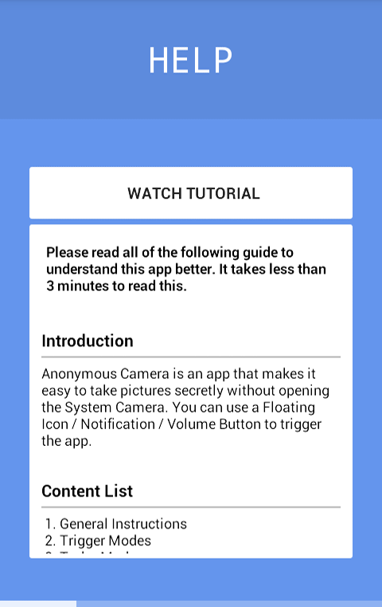
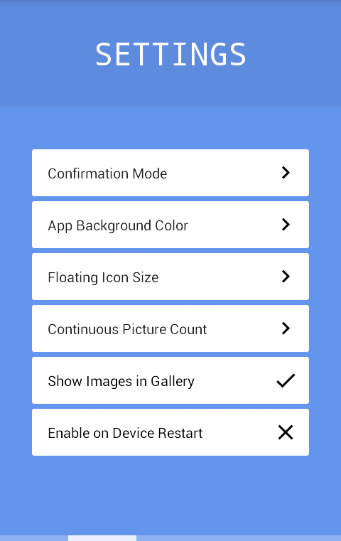
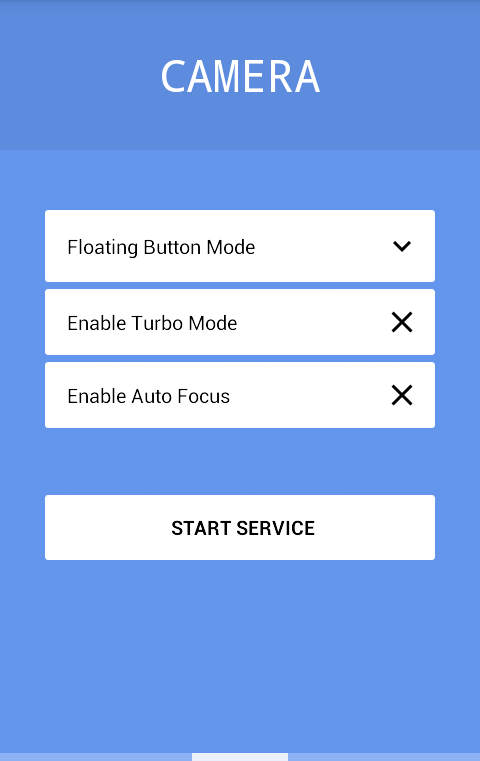
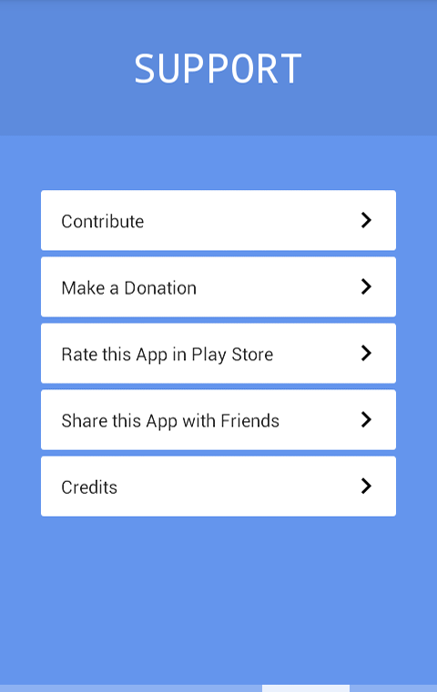
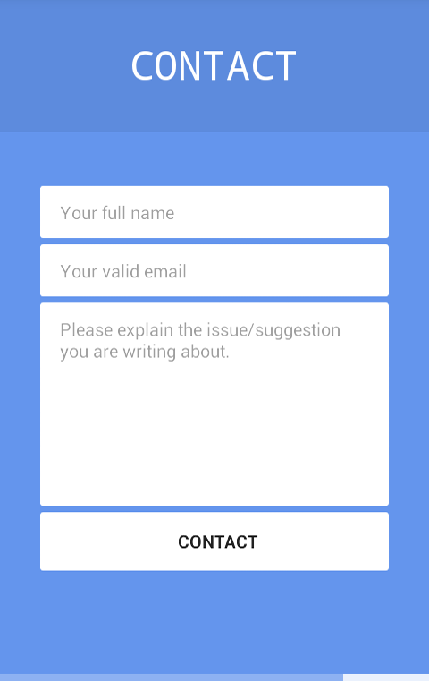
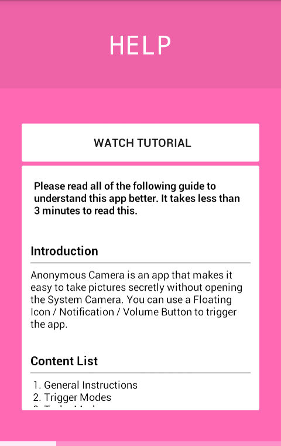
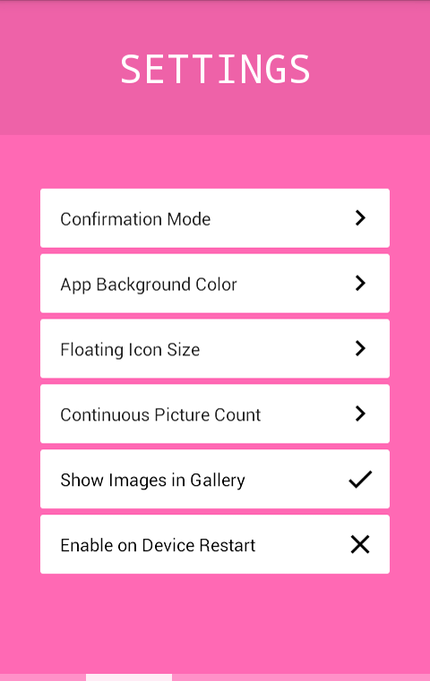
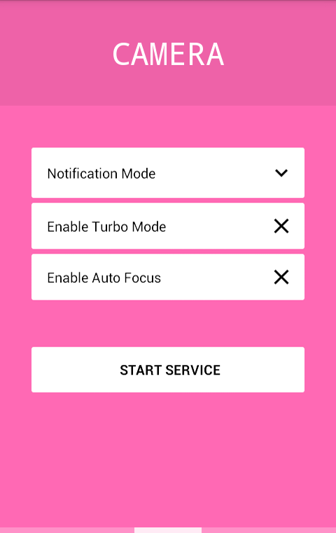
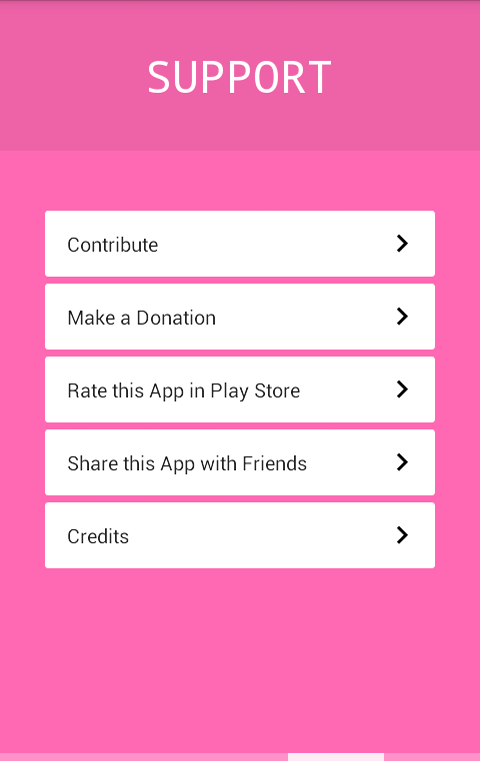
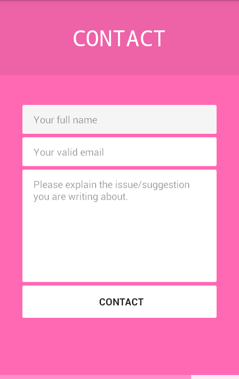
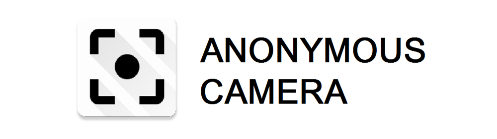